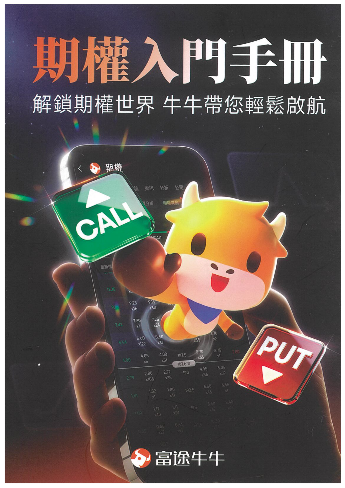
많은 유명 투자자들이 옵션(Option)을 활용해 자신의 투자 목표를 달성합니다.
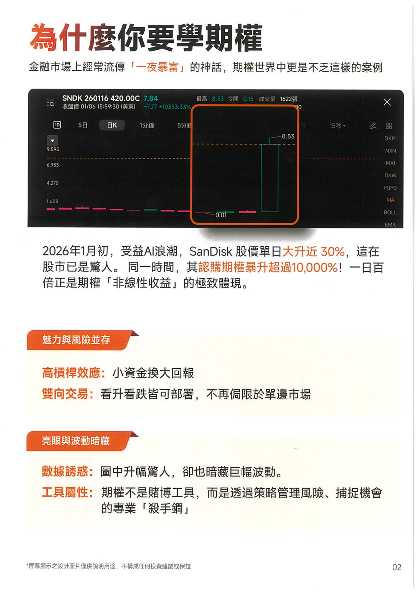
금융 시장에는 「하루 만의 폭발적 수익」이라는 신화가 자주 회자됩니다. 옵션의 세계에는 그런 사례가 적지 않습니다.
AI 열풍의 수혜를 입은 SanDisk는 주가가 하루 만에 약 30% 급등했습니다. 주식 시장만 놓고 봐도 놀라운 폭이지만, 같은 시점 해당 종목의 콜옵션은 10,000% 이상 폭등했습니다.
하루에 100배 — 옵션 특유의 「비선형 수익」이 극단적으로 드러난 사례입니다.
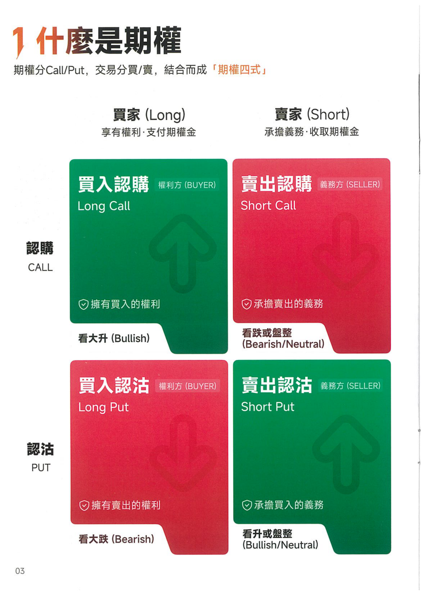
옵션은 Call(콜) / Put(풋) 두 종류로 나뉘고, 거래는 매수 / 매도로 나뉩니다. 두 축을 결합하면 「옵션 4식(四式)」이 됩니다.
매수 측은 매수할 권리를 가지고 프리미엄을 지불, 매도 측은 그 의무를 부담하고 프리미엄을 수취합니다.
매수 측은 매도할 권리를 가지고 프리미엄을 지불, 매도 측은 그 의무를 부담하고 프리미엄을 수취합니다.
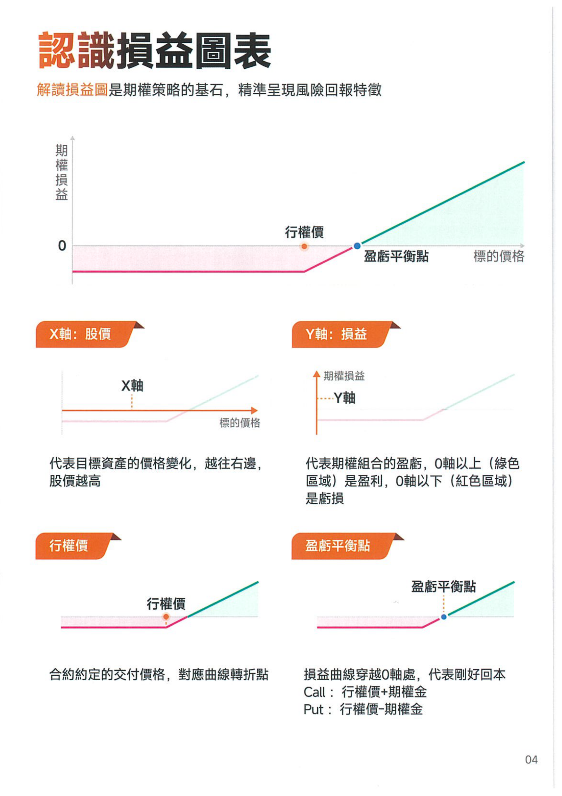
손익그래프(Payoff Diagram)는 옵션 전략을 이해하는 가장 기본이 되는 도구입니다. 리스크와 수익 구조를 한눈에 보여줍니다.
오른쪽으로 갈수록 기초자산(주가) 상승.
0축 위(녹색 영역)는 이익(Profit), 0축 아래(적색 영역)는 손실(Loss).
계약에서 약정한 거래 가격. 손익 곡선이 꺾이는 지점에 위치.
손익 곡선이 0축을 통과하는 지점. 이 지점에서 정확히 본전입니다.
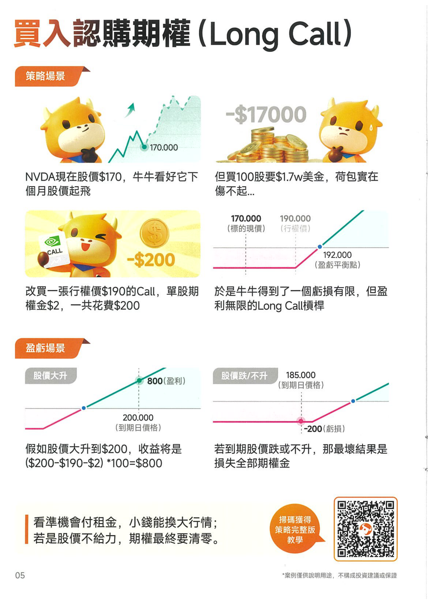
현재 주가 $170. Niu Niu는 다음 달 NVDA 주가가 크게 상승할 것으로 본다.
그러나 100주를 사려면 약 $17,000가 필요해 자금 부담이 크다.
그래서 행사가 $190의 콜옵션 1계약을 매수한다. 단주 프리미엄 $2 × 100주 = 총 $200 지불.
→ 이익은 무제한, 손실은 프리미엄으로 한정되는 Long Call 포지션 확보.
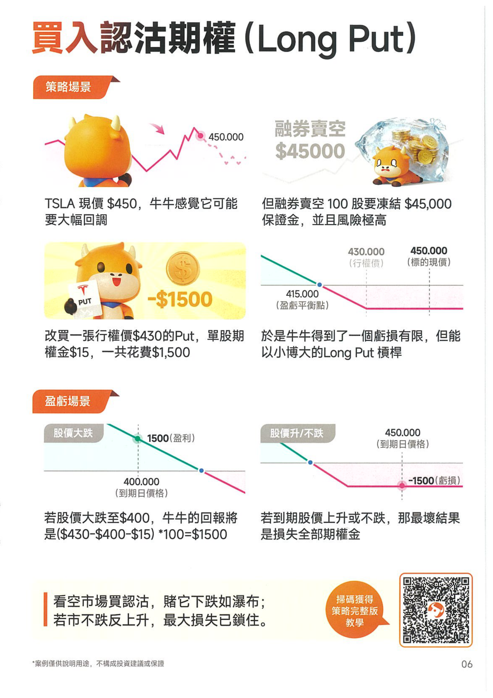
현재 주가 $450. Niu Niu는 TSLA가 다음 달 큰 폭의 조정을 받을 것으로 본다.
그러나 100주를 공매도하려면 약 $45,000의 증거금이 필요하고, 무한 손실 리스크도 부담된다.
그래서 행사가 $430의 풋옵션 1계약을 매수한다. 단주 프리미엄 $15 × 100주 = 총 $1,500 지불.
→ 이익은 한정되지만, 적은 자금으로 큰 하락에 베팅할 수 있는 Long Put 포지션 확보.
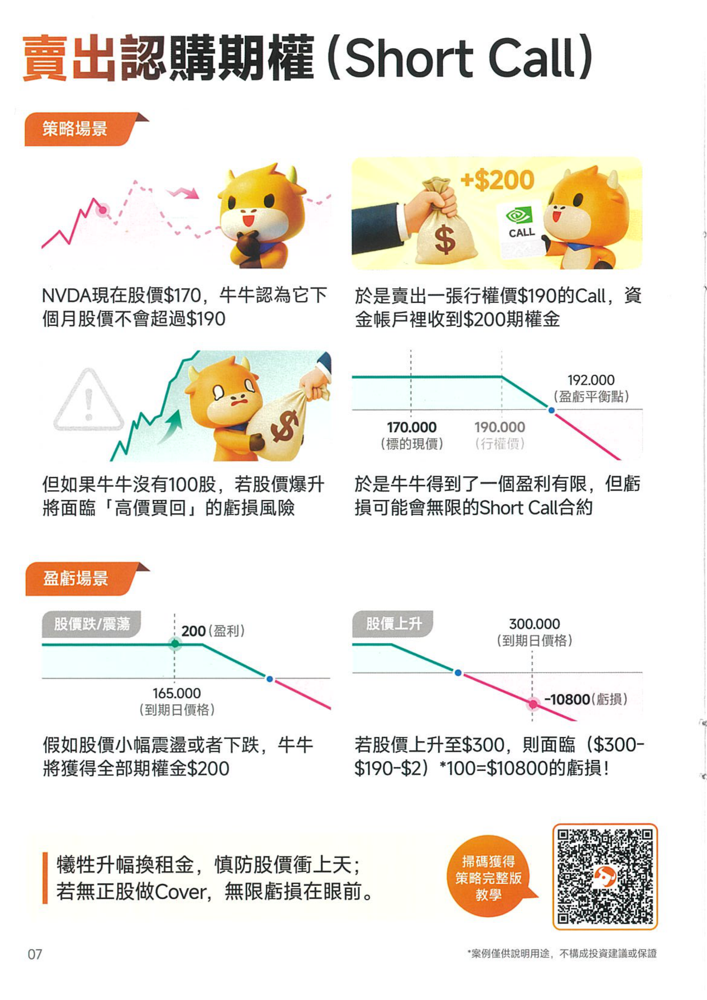
현재 주가 $170. Niu Niu는 다음 달 NVDA가 $190을 넘지 않을 것으로 본다.
그래서 행사가 $190의 콜옵션 1계약을 매도한다. 계좌에 즉시 $200의 프리미엄이 입금된다.
다만 NVDA 100주를 보유하지 않은 상태에서 주가가 급등하면 「비싸게 사서 인도」해야 하는 위험이 발생한다.
→ 이익은 프리미엄으로 한정되지만, 손실은 이론상 무제한인 Short Call 포지션.
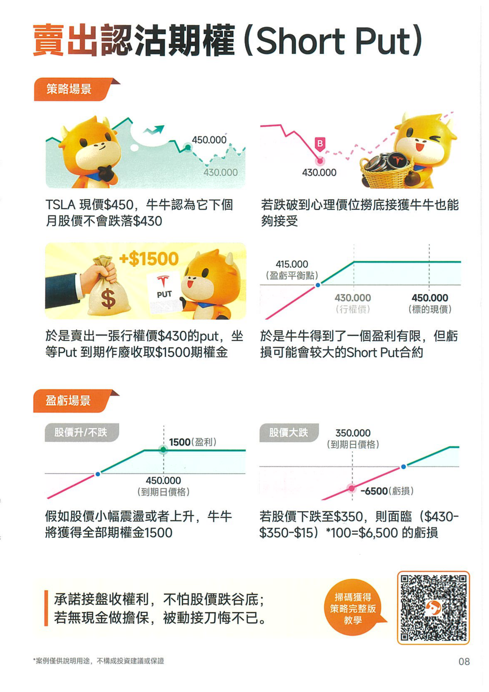
현재 주가 $450. Niu Niu는 다음 달 TSLA가 $430 아래로 떨어지지 않을 것으로 본다.
그래서 행사가 $430의 풋옵션 1계약을 매도한다. 만기 시 풋이 행사되지 않으면 $1,500의 프리미엄을 그대로 가져간다.
설령 주가가 일정 수준 아래로 떨어져 인수해야 하더라도, 마음에 두었던 가격에 매수하는 셈이라 받아들일 수 있다.
→ 이익은 프리미엄으로 한정, 손실은 (기초주가가 0이 되는 경우) 상당히 클 수 있는 Short Put 포지션.
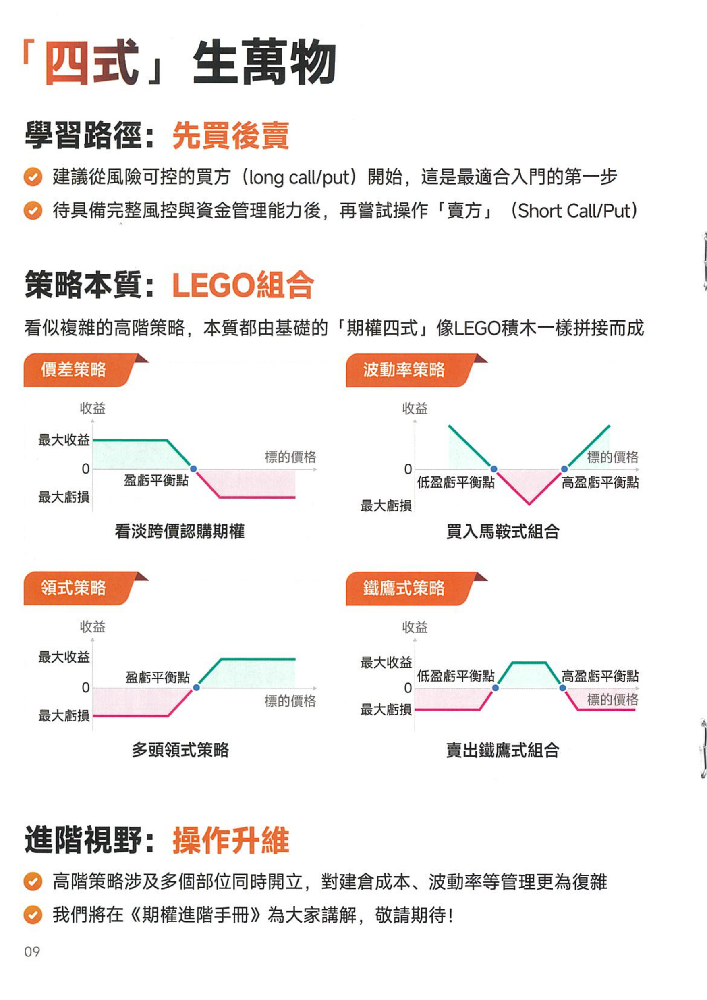
기본 4식만 익혀도, 다양한 전략을 레고 블록처럼 조립할 수 있습니다.
리스크가 통제 가능한 매수자 측(Long Call/Put)부터 시작하는 것이 입문에 가장 적합합니다. 포지션 관리·자금 관리 능력이 갖춰진 후, 매도자 측(Short Call/Put)을 시도하는 것이 안전합니다.
옵션 4식은 레고 블록처럼 결합됩니다. 복잡해 보이는 고급 전략도 결국 4식의 조합입니다.
고급 전략은 여러 포지션을 동시에 구축하기 때문에 비용·변동성 관리가 더 복잡합니다. 자세한 해설은 《옵션 심화 핸드북》에서 다룹니다.
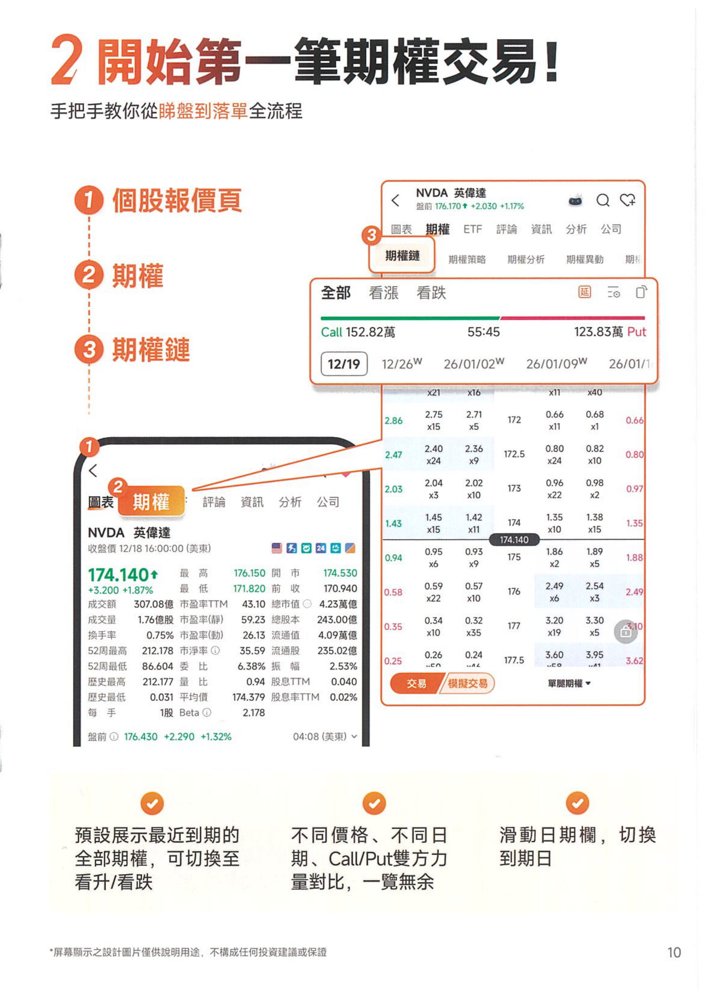
진입부터 체결까지의 흐름을 단계별로 따라가 봅니다.
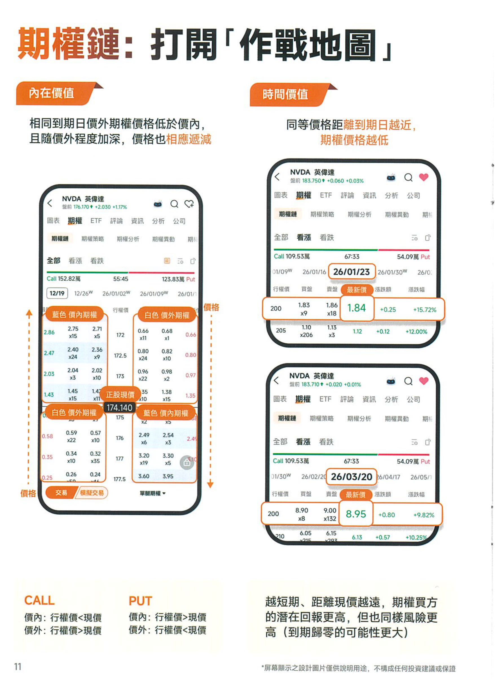
옵션체인은 가격·만기·방향이 격자 형태로 펼쳐진 한눈의 전장 지도입니다.
같은 만기일에서 외가격(OTM) 옵션은 가격이 낮습니다. 행사가가 현재가에서 멀어질수록 그 가치는 더 빠르게 줄어듭니다.
같은 행사가에서 만기가 가까워질수록 옵션 가격은 점차 줄어듭니다.
Call (콜)
Put (풋)
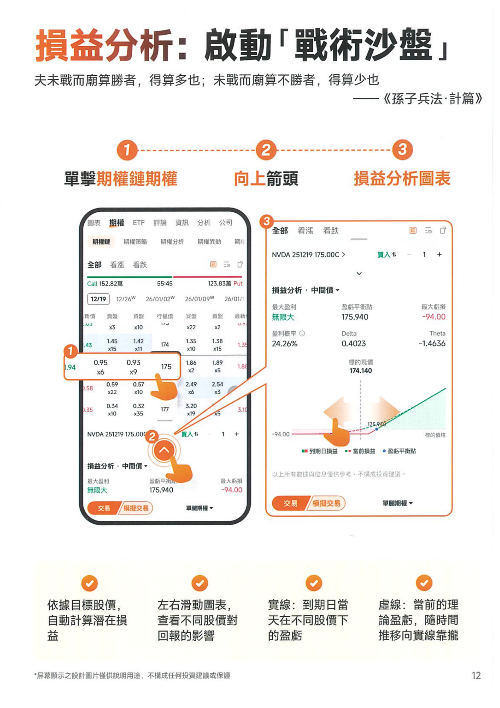
실제 자금을 투입하기 전, 전략의 손익 시나리오를 미리 시뮬레이션합니다.
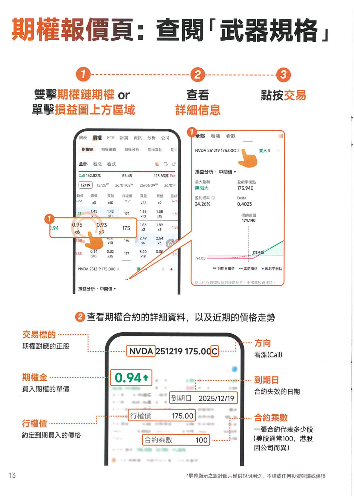
옵션체인을 더블 클릭하거나 손익 분석 차트 상단을 탭하면 상세 정보 페이지로 이동합니다.
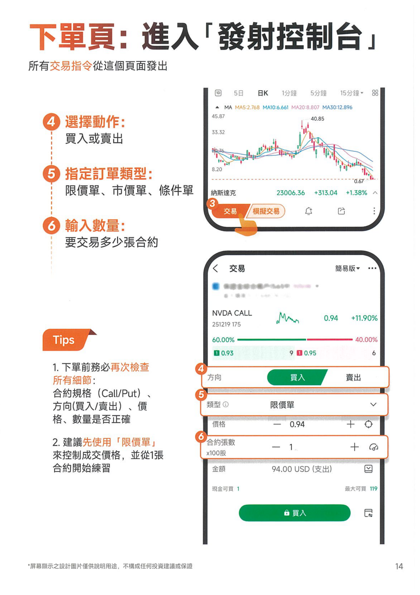
모든 거래 명령은 이 페이지에서 발사됩니다.
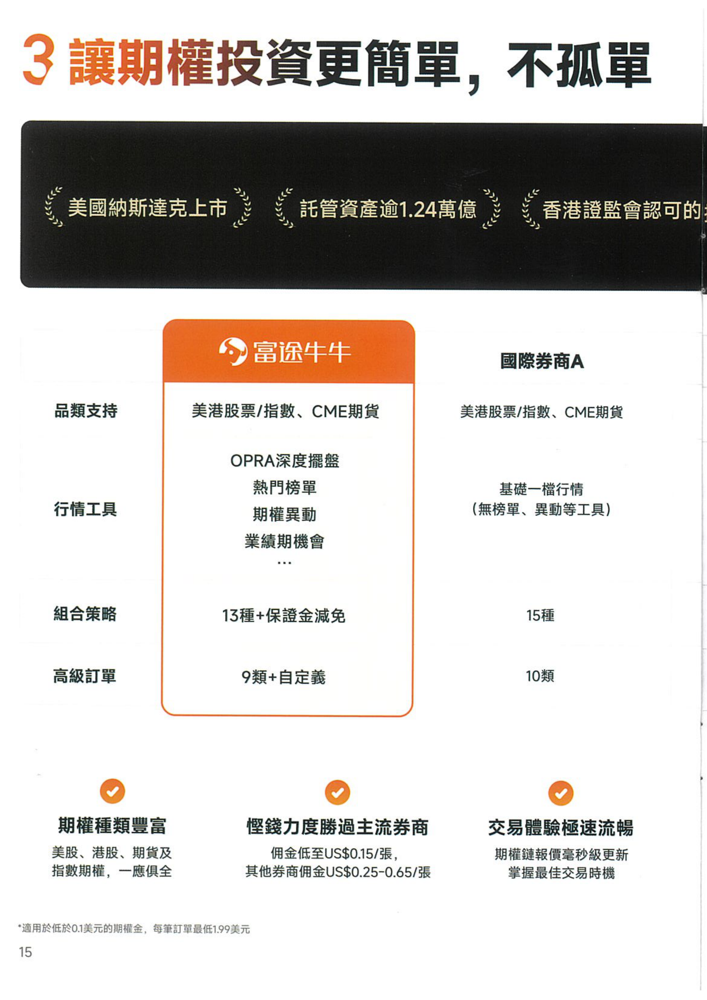
Futubull은 글로벌 2,900만 명 이상의 투자자가 선택한 플랫폼입니다.
미국 주식·홍콩 주식·옵션 등 저렴한 수수료 구조. 옵션 거래 비용은 계약당 약 $0.25–$0.65 수준.
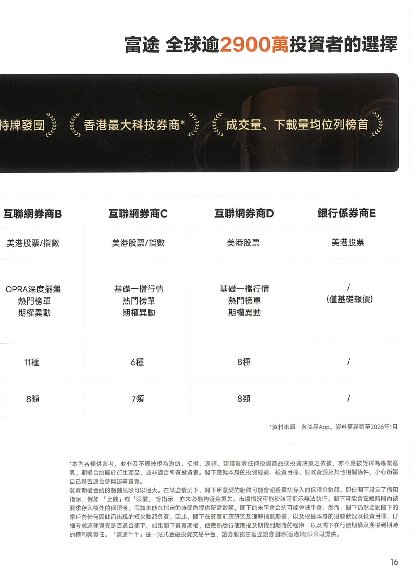
국제 증권사·인터넷 증권사·은행 증권사 비교 (옵션 투자 관점).
| 항목 | Futubull | 국제 A | 인터넷 B | 인터넷 C | 은행 D |
|---|---|---|---|---|---|
| 주식·지수 | 미국·홍콩 | 미국·홍콩 | 미국·홍콩 | 미국·홍콩 | 홍콩 |
| 선물 | CME 선물 | 일부 | — | — | — |
| OPRA 심도 호가 | ○ | ○ | ○ (지연) | — | — |
| 인기 랭킹 | ○ | — | 일부 | — | — |
| 옵션 이상거래 | ○ | — | — | — | — |
| 전략 조합 | 13종 + 증거금 감면 | 15종 | 11종 | 6종 | — |
| 조건부 주문 | 9종 + 사용자 정의 | 10종 | 7종 | 8종 | — |
미국 주식·홍콩 주식 옵션 — 최저 계약당 $0.15 수준. 지수 옵션은 1계약당 약 $0.99.
옵션체인 호가 고빈도 갱신(초 단위)으로 적시 거래 가능.
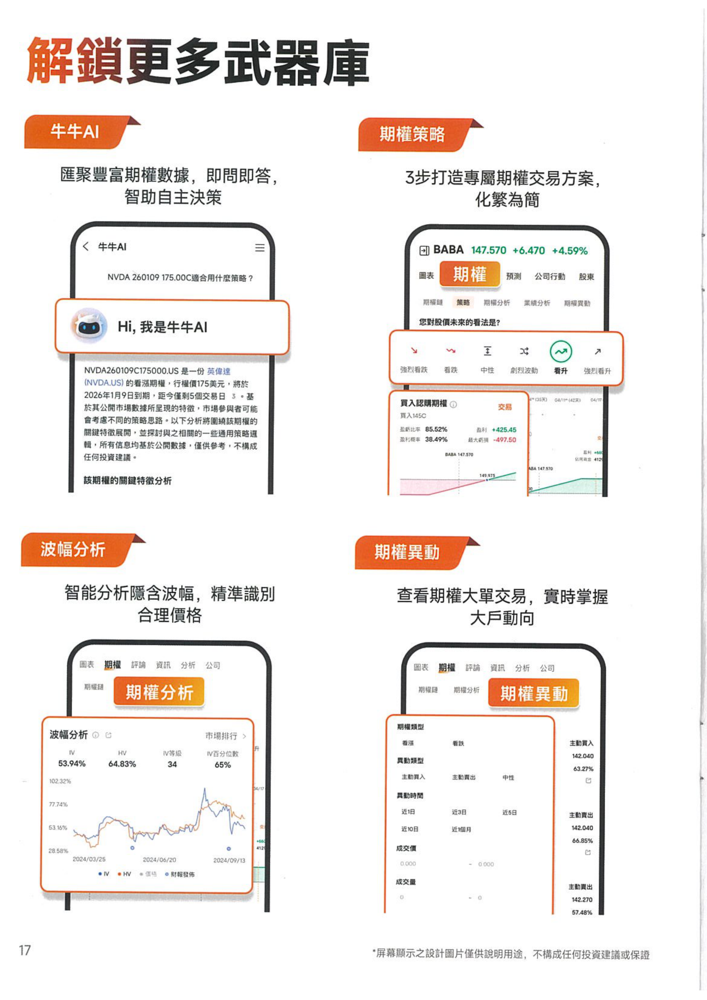
시세·호가 외에도, 의사 결정을 돕는 옵션 전용 도구가 준비되어 있습니다.
옵션 데이터 기반 질의응답. 자연어로 물으면 옵션 사양·시나리오·전략 후보를 즉시 제시.
3단계로 자신만의 옵션 전략을 설계. 다리(legs) 추가·증거금·예상 손익을 한 번에 확인.
내재변동성(IV) 추세를 보고 합리적인 가격 구간을 식별. 과대·과소평가 판별 보조.
대량 매매·이상 거래량을 모니터링해 큰손의 흐름을 빠르게 포착.
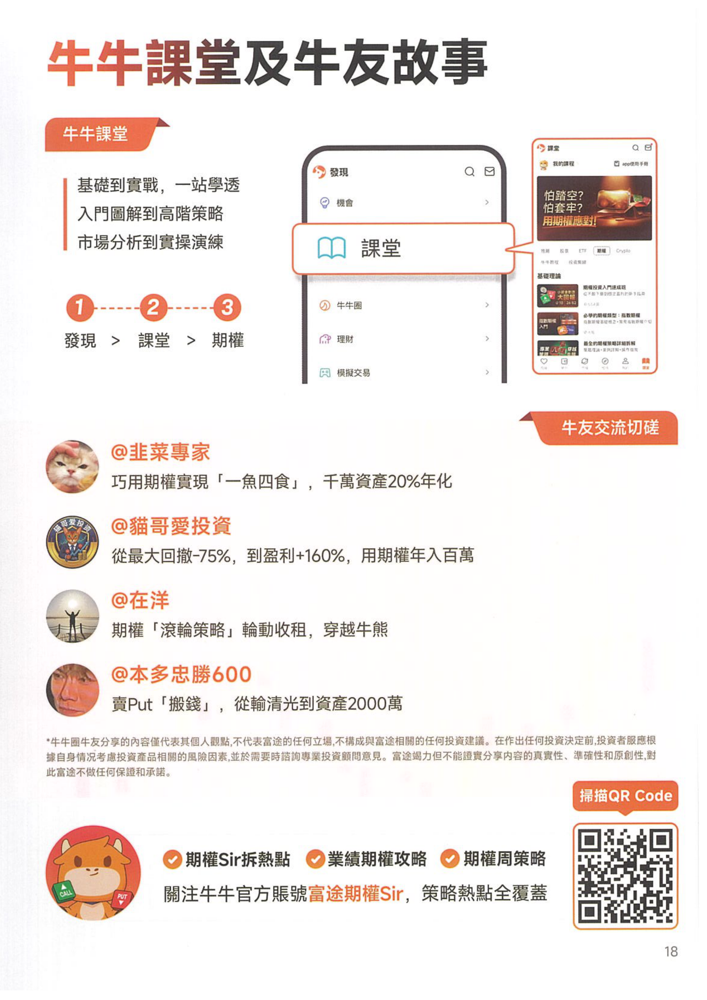
기초 지식부터 실전까지 — 옵션 학습 콘텐츠와 사용자 사례.
발견 → 클래스 → 옵션. 입문 단계의 개념 설명부터 시장 분석·실전 시뮬레이션까지 한 곳에 정리되어 있습니다.
「Option Sir」(期權Sir) — 핫이슈 분석 / Futubull 옵션 공략 / 옵션 주간 전략 / 공식 채널 — 전략·이슈를 종합 커버.